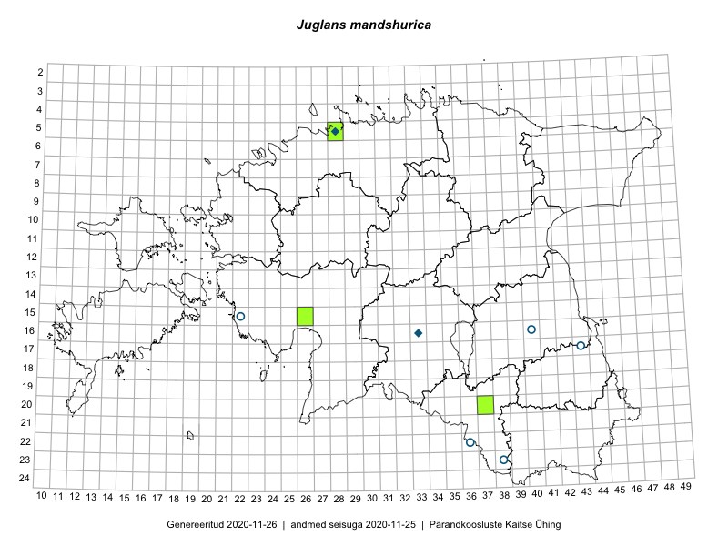

Juglans mandshurica — mandžuuria pähklipuu
Juglandaceae :: Juglans mandschurica Maxim. (15); Juglans mandshurica Maxim. (1)

Kaart põhineb 16 kirjel:
herbaareksemplare 16
Taime kaasaegsed ja ajaloolised leiukohad asuvad 9 ruudus.
Tingmärgid ja ruutude arvud periooditi (U1 / V2 )
█ 2006–2020 (3/–)
◆/◇ 1971–2005 (2/0)
○ 1921–1970 (5/0)
+ kuni 1920 (0/0)
× hävinud (–/0)
? kaheldav (–/0)
| Ruut | Leidja(d) | Leiuaeg | Kirje |
|---|---|---|---|
| 15-22 | Haide-Ene Rebassoo | 1955-08-05 | TAA0082291: Juglans mandschurica Maxim. |
| 15-22 | Haide-Ene Rebassoo | 1955-08-05 | TAA0082292: Juglans mandschurica Maxim. |
| 23-38 | Ella Tammemägi | 1957-08-09 | TAA0082293: Juglans mandschurica Maxim. |
| 23-38 | Ella Tammemägi | 1957-08-09 | TAA0082294: Juglans mandschurica Maxim. |
| 22-36 | Viive Kõvask, Ella Tammemägi | 1957-08-20 | TAA0082297: Juglans mandschurica Maxim. |
| 05-28 | Sander | 1995-10-13 | TALL A¤V245: Juglans mandschurica Maxim. |
| 22-36 | Aleksei Paivel | 1962-06-09 | TALL A003603: Juglans mandschurica Maxim. |
| 17-43 | Aleksei Paivel | 1961-08-10 | TALL A003604: Juglans mandschurica Maxim. |
| 16-40 | Aleksei Paivel | 1961-07-13 | TALL A003632: Juglans mandschurica Maxim. |
| 23-38 | M. Šestakov | 1956-07-25 | TU301430: Juglans mandschurica Maxim. |
| 16-33 | L. Pihlapuu | 1971-07-25 | TU301431: Juglans mandschurica Maxim. |
| 20-37 | Indrek Tammekänd | 2018-07-28 | TAA0147769: Juglans mandshurica Maxim. |
| 05-28 | Olev Abner | 2019-03-01 | TALL A¤V502: Juglans mandschurica Maxim. |
| 05-28 | Olev Abner | 2019-02-21 | TALL A¤V503: Juglans mandschurica Maxim. |
| 15-26 | Indrek Tammekänd | 2019-08-12 | TAA0151906: Juglans mandschurica Maxim. |
| 15-26 | Indrek Tammekänd | 2019-08-12 | TAA0151907: Juglans mandschurica Maxim. |
Ruutude arv uue atlase andmekogu järgi. Muuhulgas arvestab vanemat herbaariumi, 2005. aasta atlase välitöölehtedelt uuesti digitaliseeritud andmeid jne. Uue atlase andmekogust pärinevad andmed on kaardile kantud siniste sümbolitega.↩︎
Ruutude arv 2005. aasta atlase (Kukk, T., Kull, T., Eesti taimede levikuatlas. Eesti Maaülikool, Põllumajandus- ja Keskkonnainstituut, Tartu, 2005) järgi. Andmeallikana on kasutatud levik.exe programmi, kus igas ruudus on registreeritud vaid uusim leid. Seetõttu on vanemate perioodide kohta andmed puudulikud. Kasutatud levik.exe andmestikus leidub mõningaid kõrvalekaldeid atlase trükis ilmunud versioonist, sagedamini tarnade ja käpaliste seas. Lisaks leidub selles andmestikus valik liike (peamiselt väheste leidudega tulnuktaimed), mille kaarte trükis ei avaldatud. Vana atlase andmed ruutudest, milles ei ole uue atlase andmekogus leide enne 2006. aastat, on kaardil esitatud punaste sümbolitega. Vana atlase andmetel hävinud ja kaheldavaid leiukohti pole hilisemate (taas)leidude põhjal korrigeeritud.↩︎